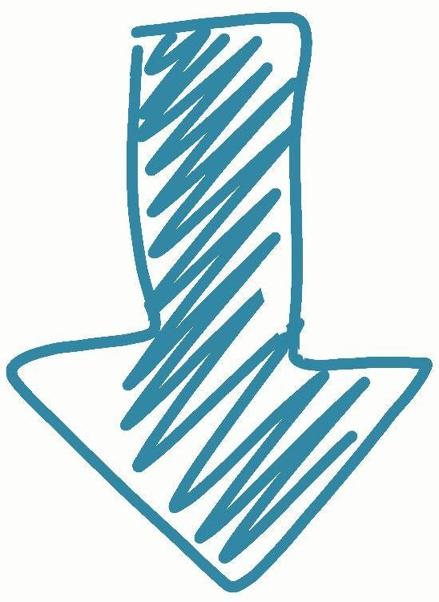
1.- En general, existen varios algoritmos para resolver un mismo problema. Entonces ¿Cómo debemos escoger un algoritmo?.
Para poder analizar el desempeño de un algoritmo, debemos predecir los recursos que éste requiere, entre los que se encuentran:
-Cantidad de almacenamiento principal requerido por sus variables
-Cantidad de tráfico que genera un red de computadores
-Cantidad de Información que debe moverse desde y hacia las unidades de almacenamiento secundario
-Simplicidad del algoritmo
-Tiempo de cómputo
La complejidad espacial y la complejidad temporal son dos criterios para medir el uso del tiempo y el espacio para el cálculo en un computador, respectivamente.
Algunas personas piensan que las computadoras son tan rápidas que no hay problema con el tiempo, pero si recordamos el problema de las torres de Hanoi1, existen tareas que pueden requerir siglos y todavía no existen computadoras que pueden resolverlos. El tiempo es un factor primordial en aplicaciones como: predicción del clima, problemas de búsqueda, y en general los llamados problemas de tiempo real.
Existe una premisa en la complejidad computacional: El tiempo tomado por un algoritmo depende de su entrada, por ejemplo: ordernar tres (3) números tomará distinto tiempo que ordernar mil (1000), y diferente que ordernar cien mil (100.000). Esto indica, que en general, el tiempo tomado en ejecutarse un algoritmo tiene una función de dependencia con el número o tamaño de la entrada.
Existe una premisa en la complejidad computacional: El tiempo tomado por un algoritmo depende de su entrada, por ejemplo: ordernar tres (3) números tomará distinto tiempo que ordernar mil (1000), y diferente que ordernar cien mil (100.000). Esto indica, que en general, el tiempo tomado en ejecutarse un algoritmo tiene una función de dependencia con el número o tamaño de la entrada.
En consecuencia de lo descrito anteriormente, se define el tiempo de corrida, como el tiempo requerido (unidades como milisegundos, segundos, minutos, horas y así) por un algoritmo para procesar una entrada de tamaño n.
Generalmente, para relacionar el tiempo de corrida con el tamaño de la entrada se utiliza una función T(n) que representa su complejidad computacional.
Sea T(n) el tiempo de corrida de algún programa, se asume lo siguiente:
1. . El argumento n es un entero no negativo, y
2. . T(n) es no negativo para todos los argumentos de n.
2.- Complejidad constante: cuando la complejidad del algoritmo puede expresarse como una función constante T(n)=a, se dice que es constante, no depende de n.
Ejemplo 1. El procedimiento, eleva al cuadrado, recibe n y regresa el cuadrado de n.
| int cuadrado(int n) | Costo | veces |
| return n*n; | c1 | 1 |
3.- Complejidad lineal: Cuando la complejidad de un algoritmo puede expresarse como una función lineal T(n)=an+b, donde a y b son constantes se dice que es lineal en n.
Ejemplo 2. El siguiente programa inicializa un arreglo de n elementos.
| void inicializa(int *A,int n) | Costo | veces |
| i=1; | c1 | 1 |
| while(i<=n) | c2 | n+1 |
| A[i]=1; | c3 | n |
| i++ | c4 | n |
| T(n)= | c1+(n+1)c2 +nc3+nc4 |
| T(n)= | nc2+nc3+nc4+c1+c2 |
| T(n)= | (c2+c3+c4)n + (c1+c2) |
| T(n)= | an + b |
Si se asigna el valor de una unidad de tiempo para cada instrucción, la complejidad del programa es T(n)=3n+2, lo que significa que es lineal.
4.- Complejidad cuadrática: cuando la complejidad de un algoritmo puede expresarse como una función cuadrática del tipo T(n)=an^2+bn+c, donde a,b y c son constantes, se dice que el algoritmo es cuadrático en n.
Ejemplo 3. Se analiza el siguiente código:
for(i=1;i< n-1; i++)
for(j = 1;j < n-1 ; j++)
A[i,j]=1;
Si se analiza el primer repita para (for) interno, es decir las líneas 2 y 3 (se simplica asumiendo que valor de todos los costos constantes es igual a 1).
En la línea dos se realiza la asignación j=1 una vez, esto es c1; la condición se verifica n veces, esto es c2n, el incremento de j se realiza n-1 veces, esto es c3(n-1). La instrucción de la línea 3 se ejecuta (n-1) veces por lo que su complejidad es c4(n-1). Finalmente la complejidad de las líneas 2 y 3 es:
c1+c2n+c3(n-1)+c4(n-1)=1+n+2(n1)=3n-1
En la línea 1 la asignación, la comparación y el incremento son similares a las de las línea dos por lo que la complejidad es : c1+c2(n)+c3(n-1). Además hay que añadir el costo de las líneas 2 y 3, 3n-1, que se ejecutarán (n-1) veces, lo que resulta en:
c1+c2(n)+c3(n-1)+(3n-1)(n-1)=1+2n-1+3n^2-3n-n+1=3n^2-2n+1
El tiempo total del algoritmo se puede describir como T(n)=an^2+bn+c, por lo que se dice que es un algoritmo cuadrático en el plano del tiempo. Muy frecuentemente, el tiempo de corrida de un programa depende de una entrada en particular y no sólo del tamaño de la entrada. Entonces las complejidades se denotan como:
-En el mejor de los casos: se define T(n) como el tiempo mínimo de corrida para todas las entradas de tamaño n.
-En el peor de los casos: se define T(n) como el tiempo máximo de corrida para todas las entradas de tamaño n.
-En promedio: otra medida común de desempeño Tavg(n), el tiempo promedio de corrida del programa sobre todas las entradas de tamaño n. Aún cuando el tiempo promedio es una medida más realista, en la práctica es más dificil de calcular que el peor de los casos.
5.- Límite asintóticos
El tiempo de corrida depende de la computadora en que se corra y del compilador utilizado para el programa, por ello usualmente el tiempo de corrida de corrida se expresa utilizando el orden de crecimiento o la tasa del crecimiento de este. Cuando se observa entradas de tamaño lo suficientemente grandes para que sólo el orden de crecimiento de la complejidad sea relevante, estamos estudiando la eficiencia asintótica de los algoritmos. Existen tres tipos de notación para denotar los límites asintóticos:
, math>$ \Omega$ y .
Notación
Sea f(n) una función definida para los enteros no negativos n. Decimos que T(n) es O(f(n)). que se lee como T(n) es de orden f(n) si T(n) es a lo más una constante de veces de f(n), excepto posiblemente para algunos valores de n.
Formalmente decimos que T(n) es O(f(n)) si existe un entero n0 y una constante c > 0 tal que para todos los enteros n > n0 tenemos que 0<= T(n) <= cf(n)
Ejemplo: Sea T(n)=3n+2 la complejidad de un algoritmo. si escogemos f(n)=n, n0=1 y c=5, la condición 0<=T(n)<=5n se cumple para todos los n>=1, por lo que podemos decir que T(n) es O(n)
Tabla de funciones de notación O
| Notación O | Función |
| O(1) | Constante |
| O(log n) | Logarítmica |
| O(n) | Lineal |
| O(n log n) | n log n |
| O(n^2) | Cuadrático |
| O(n^3) | Cúbico |
| O(2^n) | Exponencial |
Notación
La notación se utiliza para especificar la cota inferior de la razón de crecimiento de T(n). Formalmente decimos que T(n) es si existe un entero n0 y una constante c>0 tal que para todos los enteros n>=n0, tenemos que 0<=cf(n)<=T(n)
Ejemplo: Sea T(n) 3(n log(n) ), entonces T(n) es ya que podemos escoger n0=1, f(n)=log(n), y c=1. De esta forma, para todos los n>=1, log n <= 3(n log(n) )
Para especificar la cota inferior de la razón de crecimiento de T(n) se usa la anotación
Notación
Formalmente decimos que T(n) es si existe un entero n0 y las constantes c1 y c2>0 tal que para todos los enteros n>=n0, tenemos que 0 <= c1f(n) <= T(n) <= c2f(n).
Ejemplo: Sea T(n)=2n^2, entonces T(n) es ya que existen n0=1, c1=1, c2=3 de manera que todos los n>=1, 0 <= n^2 <= 2n^2 <= 3n^2
6.- La regla de la suma modificada
Suponga que un programa consiste en dos partes, una de las cuáles es de complejidad O(n^2) y la otra de O(n^3). En muchos casos como este, es posible sumar estas dos complejidades usando la regla de la suma:
Suponga que T1(n) es de O(f1(n)), mientras que T2(n) es de O(f2(n)), además suponga que f2 no crece más rápido como f1; esto es f2 es de O(f1). Entonces podemos concluir que T1(n) + T2(n) es O(f2(n)).
Fin de las notas de V. Bravo
7.- Cálculo de complejidad en funciones recursivas
(tomado de Matemática Discreta y Lógica, de W. F. Grassmann y J.P. Tremblay).
Considere el siguiente programa trivial para calcular el enésimo número de Fibonacci:
function fib(n:integer): integer;
begin
if n<2 then fib:= n { fib(0) = 0, fib(1) = 1) }
else
fib := fib(n-1) + fib(n-2)
end
end
Calculemos el número de llamadas que se hace con la cláusula else, considerando las operaciones activas (operaciones que se realizan tantas veces como cualquier otra operación). En este caso esas operaciones podrían ser las que se realizan en la sección del else:
Uno podría, por ejemplo, contar el número de operaciones de punto flotantes por segundo (FLOPS1) que producen las instrucciones del programa. Pero eso no es necesario cuando las operacionesn activas son muy similares en sus medidas FLOPS.
Veamos el ejemplo siguiendo el texto citado: “El número de operaciones activas necesario para calcular Fn = fib(n) se denota con mediante T(n). Claramente T(0) = T(1) = 0. Además, para obtener fib(n), n >= 2, se ejecutan inmediatamente dos llamadas, una a fib(n-1) y otra a fib(n-2). Por la definición de T(n), estas dos llamadas requieren T(n-1) y >operaciones activas, respectivamente.
Para calcular Fn, consiguimientemente, se necesitan 2 + T(n-1) + T(n-2) llamadas, esto es:
Ecuación recurrente de Fibonacci
T(n) = 2 + T(n-1) + T(n-2)
Se puede calcular T(n) en la forma siguiente:
T(2) = 2 + T(1) + T(0) = 2
T(3) = 2 + T(2) + T(1) = 2 + 2 = 4
T(4) = 2 + T(3) + T(2) = 2 + 4 + 2 = 8
...
Resulta que para n=100 hay aproximadamente 10^21 llamadas recursivas a una función. Con una velocidad aproximada 10^15 de un millón de funciones por segundo, esto es aproximadamente segundos, o unos 10 millones de años!!!.
En otras palabras, el cálculo de Fn mediante el algoritmo que acabamos de dar es impracticable para valores elevados de n.”
De hecho,T(n) = 2 + T(n-1) + T(n-2) es lo que se conoce como una relación de recurrencia no homogénea, cuya expresión genera es :
Para resolver ese tipo de ecuación se comienza, cuando se puede, resolviendo la ecuación homogénea correspondiente. Para Fibonacci es:
recurrencia homogénea de Fibonacci:
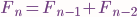
Transformándola primero en:
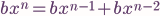
y luego, diviendo por
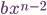
en
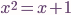
Esta es una expresión cuadrática cuyas soluciones son:
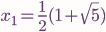
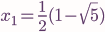
Como dicen los autores, esto significa que tenemos dos soluciones a la ecuación, a saber:
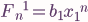 o 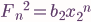
En general, si 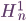 y 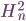 son dos soluciones diferentes a una relación recurrente homogénea, también lo será
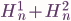
En este caso:
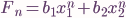
lo cual conduce, con estas transformaciones:
a
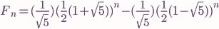
Volviendo con el código anterior, uno podría reexpresar a T(n) así:
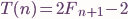
puesto que la solución de la recurrencia no homogénea se obtiene de la homogénea así:
Es decir,
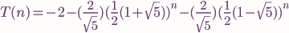
lo que simplemente significa que T(n) crece exponencialmente de la misma forma que Fn.
2 http://en.wikipedia.org/wiki/FLOPS8.- Algoritmos más eficientes para Fibonacci
¿Será posible calcular el enésimo fibonacci con un algoritmos menos complejo?. La respuesta es sí. Acá van varios ejemplos (incluyendo una versión del anterior) tomados de http://www.ics.uci.edu/~eppstein/161/960109.html
El algoritmo 1 es como el que acabamos de analizar. Sumamente ineficiente, para n=45, da un millardo de pasos:
int fib(int n)
{
if (n <= 2) return 1
else return fib(n-1) + fib(n-2)
}
El algoritmo 2 no usa recursión sino arreglos de memoria y es mucho más eficiente. Para n=45, da 90 pasos (cuantas veces menos que el anterior?). Su complejidad es
int fib(int n)
{
int f[n+1];
f[1] = f[2] = 1;
for (int i = 3; i <= n; i++)
f[i] = f[i-1] + f[i-2];
return f[n];
}
El algoritmo 3 es un poco más lento (cuanto?) que algoritmo 2, pero usa mucho menos espacio de almacenamiento!.
int fib(int n)
{
int a = 1, b = 1;
for (int i = 3; i <= n; i++) {
int c = a + b;
a = b;
b = c;
}
return b;
}
El algoritmo 4, también es muy eficiente. La complejidad en tiempo es O(n) y en espacio es O(1).
int fib(int n)
{
int M[2][2] = {{1,0},{0,1}}
for (int i = 1; i < n; i++)
M = M * {{1,1},{1,0}}
return M[0][0];
}
Para entenderlo, considere que M es una matríz y que {{1,0},{0,1}} es una forma de escribirle 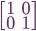 al computador para inicializar a M (una matríz de dos por dos, obviamente). Ahora pruebe que en sucesivas multiplicaciones de la matriz 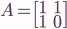 por M, el elemento 1, 1 (en la esquina superior izquierda de M) siempre almacena el último número de la secuencia fibonacci.
(%i2) matrix([1,1],[1,0]);
(%o2) matrix([1,1],[1,0])
(%i3) matrix([1,1],[1,0])*%o2;
(%o3) matrix([1,1],[1,0])
(%i4) matrix([1,1],[1,0]).%o2;
(%o4) matrix([2,1],[1,1])
(%i5) matrix([1,1],[1,0]).%o4;
(%o5) matrix([3,2],[2,1])
(%i6) matrix([1,1],[1,0]).%o5;
(%o6) matrix([5,3],[3,2])
(%i7) matrix([1,1],[1,0]).%o6;
(%o7) matrix([8,5],[5,3])
9.- Los límites de la computabilidad
Discutiremos esta tabla en clase (basada en la de Matemática Discreta y Lógica, de W. F. Grassmann y J.P. Tremblay, pag 310)
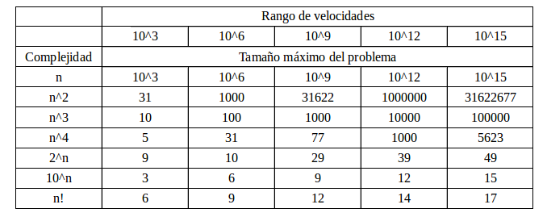
Decimos que la segunda fila nos da la velocidad (por ejemplo en FLOP) que pudiera alcanzar un computador o sistema de cómputo. Las siguientes filas detallan el tamaño del problema que pudiera resolverse, en tiempos razonables, dada la complejidad de ese problema (según la primer columna) y la velocidad particular del computador (en la fila 2, columna correspondiente).
Para implementaciones de algoritmos para cálculo de fibonacci, ver http://www.scriptol.com/programming/fibonacci.php
Fin del la guía introductoria a la Complejidad Computacional.
Se concede permiso de copiar, distribuir o modificar este documento bajo los términos establecidos por la licencia de documentación de GNU, GFDL, Version 1.1 publicada por la Free Software Foundation en los Estados Unidos, siempre que en la nuevas contribuciones se mantengan las secciones actuales sin cambios de fondo y los cambios de fondo se coloquen en nuevas secciones o con nuevos textos de portada o nuevos textos de cubierta final. También se requiere mantener invariantes los espacios vacios de este documento, claves para el ejercicio de aprendizaje y descubrimiento. Una copia de esta licencia se incluye en algún lugar del documento como ``GNU Free Documentation License´´. Nos apegaremos a esta licencia siempre que no contradiga los términos establecidos en la legislación correspondiente de la República Bolivariana de Venezuela.
Según establece GFDL, se permite a cualquier modificar y redistribuir este material y los autores originales confiamos que otros crean apropiado y provechoso hacerlo. Esto incluye traducciones, bien a otros lenguajes naturales o a otros medios electrónicos o no.
En nuestro entender de GFDL, cualquiera puede extraer fragmentos de este texto y usarlos en un nuevo documento, siempre que el nuevo documento se acoja también a GFDL y sólo si se mantienen los créditos correspondientes a los autores originales (tal como establece la licencia).
Fin del documento de complejidad computacional. Mayo 2010.